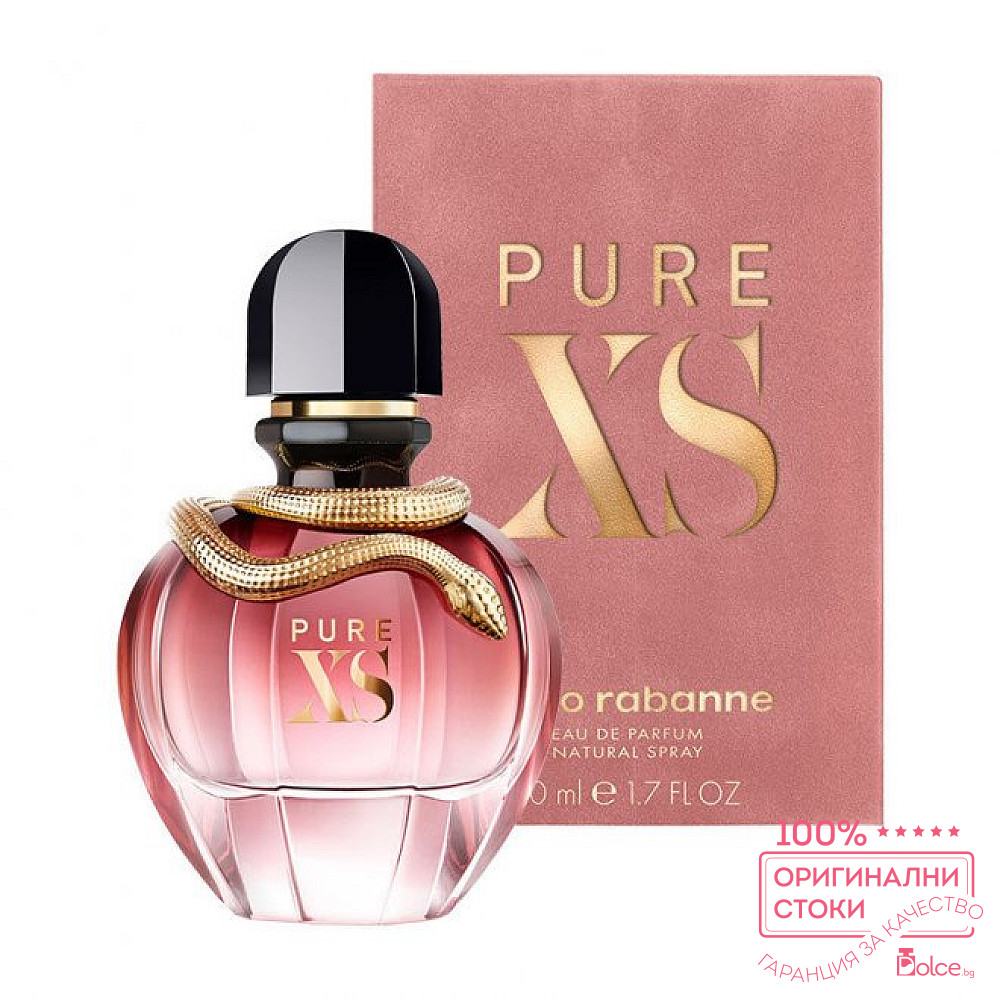

Розовото масло (на английски: rose oil, rose otto или rose attar) е продукт от маслодайни рози, получен чрез двойна дестилация на различни видове рози – Rosa damascena, sempervirens, moschata, centifolia и други, които се отглеждат в Европа, Азия и Африка. Заради своите качества и цена маслото е известно и като „течно злато“.
Роза Дамасцена (Rosa damascena), известна също като Розата на Кастилия е хибриден вид маслодайна роза, получена от съчетаването на Галска роза и Мускусна роза.[1] Има данни, че с маслодайната роза е свързан и сортът Rosa fedtschenkoana.[2]
Цветовете ѝ са известни с финия си аромат и се берат за розово масло („роза ото“ или „роза абсолю“,[3] което се използва в парфюмерията) и за розова вода и „розов конкрет“.[4][5] Венчелистчетата на цветовете са годни и за консумация. Те могат да се използват за ароматизиране на храни, като гарнитура, като билков чай и да се консервират със захар.
